Background
Computer Science student at BINUS University with an interest in software development, technology, and problem solving.
Home — Introduction
Interested in software development, technology, and problem solving. Currently seeking an internship opportunity to apply my technical skills, gain hands-on experience, and contribute to real-world technology projects.
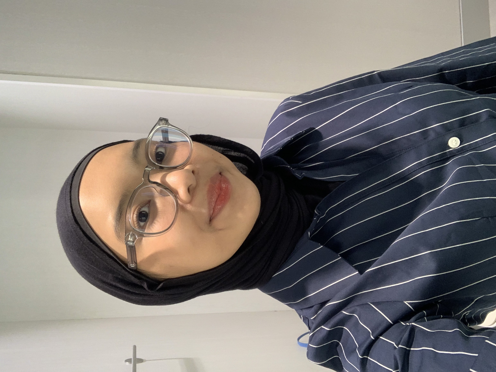
About Me — Profile
Computer Science student at BINUS University with an interest in software development, technology, and problem solving.
Experienced in analyzing requirements, designing systems, building applications, testing, and documenting projects. I enjoy learning through hands-on projects and applying technology to solve real-world problems.
Skills — Core Competencies
Portofolio — Selected Projects
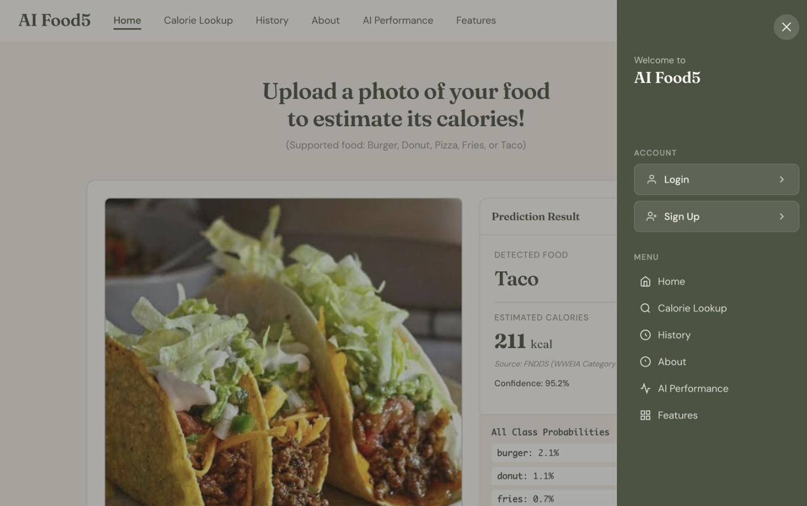
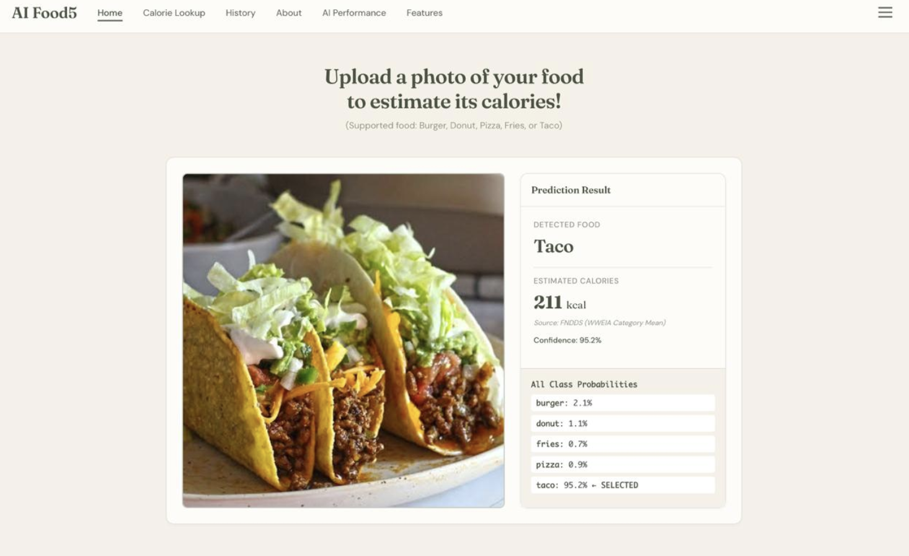
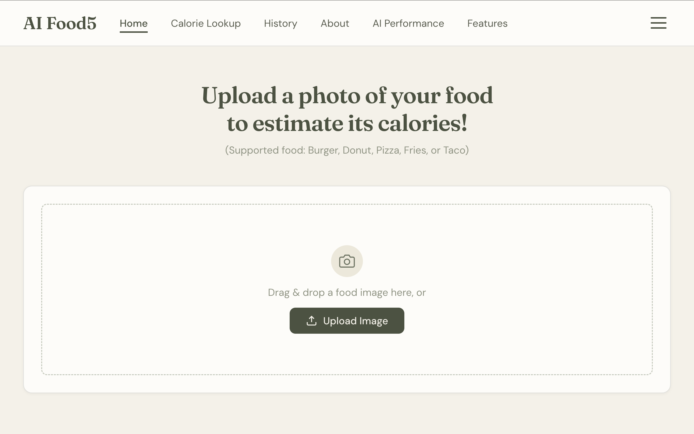
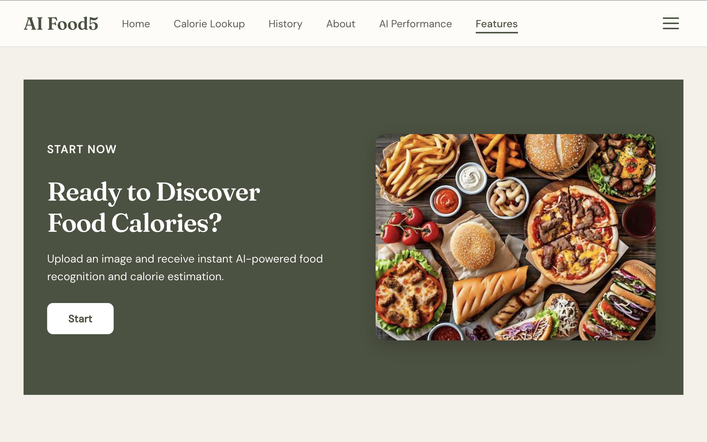
Package AI / Web Application
The problem — estimating calorie intake from food can be difficult when users have to identify the food and look up its nutritional information manually.
The build — a web-based application that uses deep learning to classify fast food images and estimate their calorie content. I contributed to developing the web application and integrating the food classification model into the prediction workflow.
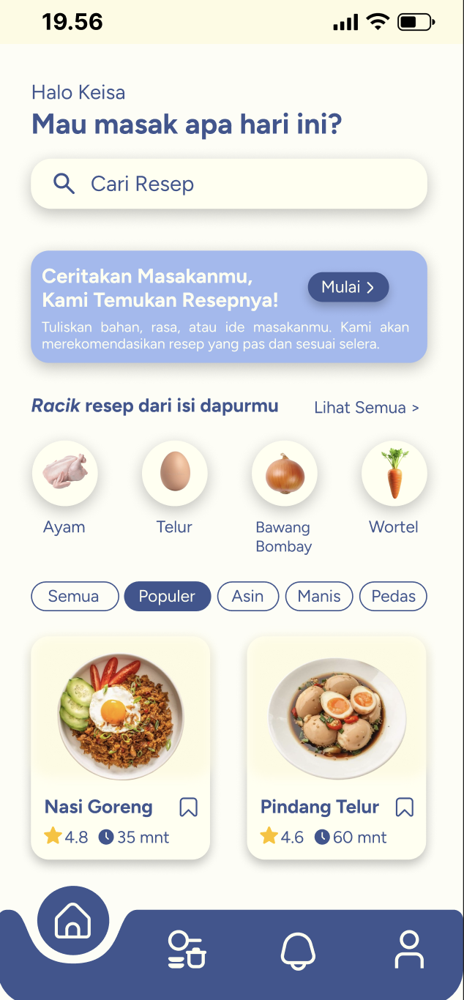
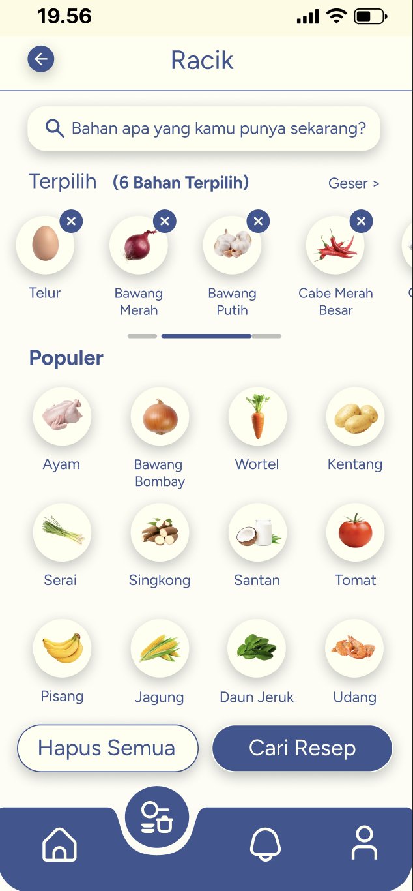
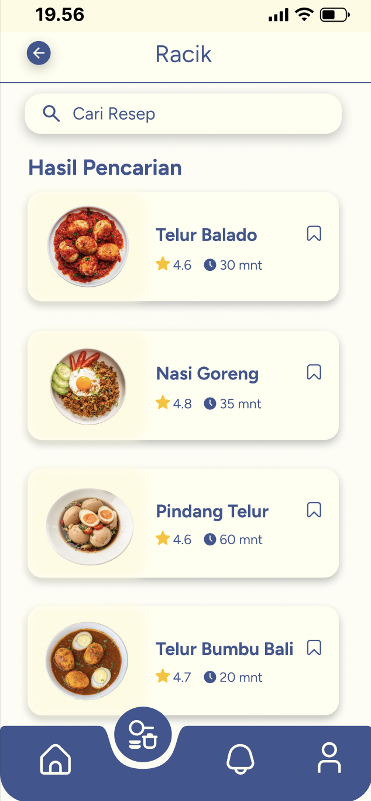
Package UI/UX Design
The problem — Finding recipes and deciding what to cook can be challenging, especially for users who want practical meal ideas using ingredients they already have while exploring Indonesian cuisine.
The build — Designed a mobile app UI prototype that helps users discover Indonesian recipes through search, conversational recipe recommendations, and ingredient-based suggestions. The project included defining target users, designing key screens, gathering user feedback through open-ended interviews, and improving the interface based on usability feedback. I collaborated with the team to develop the application concept, design the UI prototype, analyze user feedback, and refine the interface based on evaluation results.
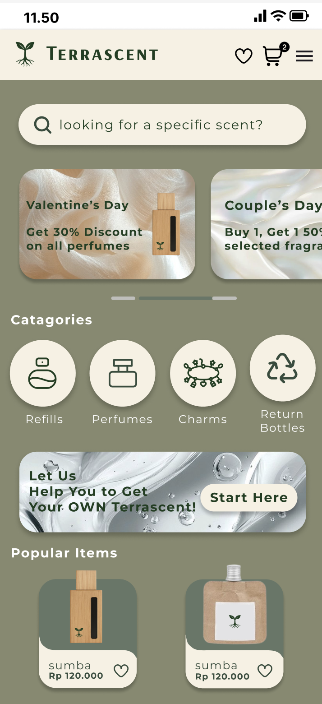
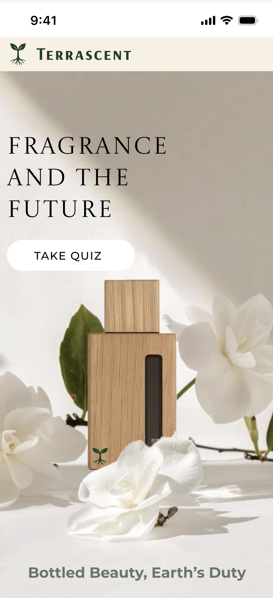
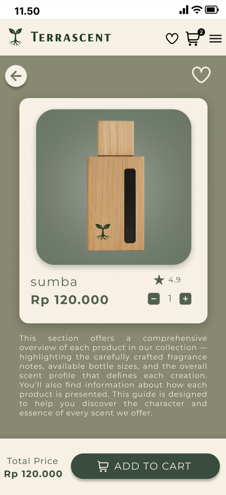
Package Business / Product Design
The problem — conventional perfume packaging creates significant waste, while environmentally conscious consumers still look for products that are practical, affordable, and aesthetically appealing.
The build — a sustainable fragrance brand concept featuring reusable wooden perfume bottles, eco-friendly refills, personalized scent recommendations through a quiz, and a bottle return and loyalty system. The project covered customer research, user persona, empathy mapping, product and website prototyping, perceptual mapping, and business model planning.
Education & Experience — Overview
Education · 2024 – Present
Bachelor’s Degree in Computer Science
Education · 2021 – 2024
Senior High School
Research Project · 2026
The research — Research project focused on developing a deep learning based food image classification system with lookup based calorie estimation. The study evaluated six deep learning architectures, including YOLOv8, YOLOv11, ResNet18, ResNet34, MobileNetV3, and MobileNetV4.
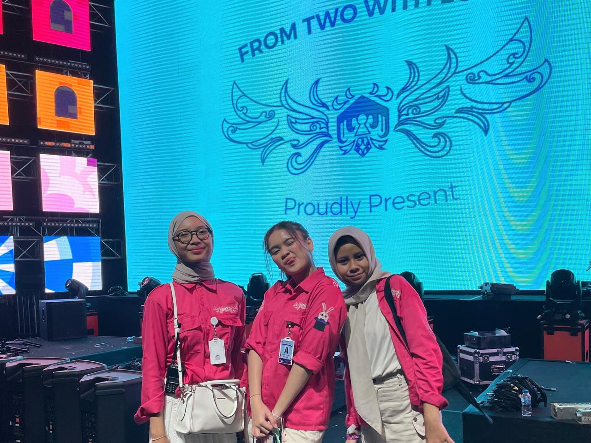
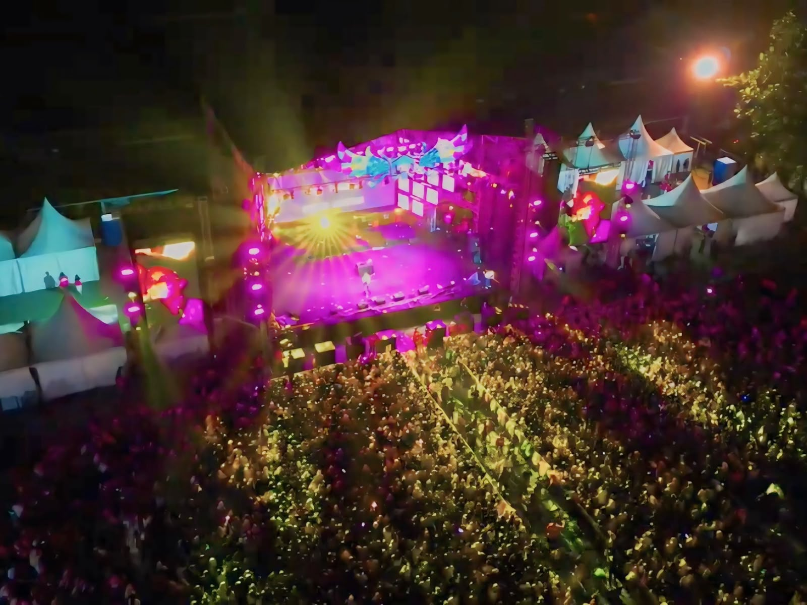
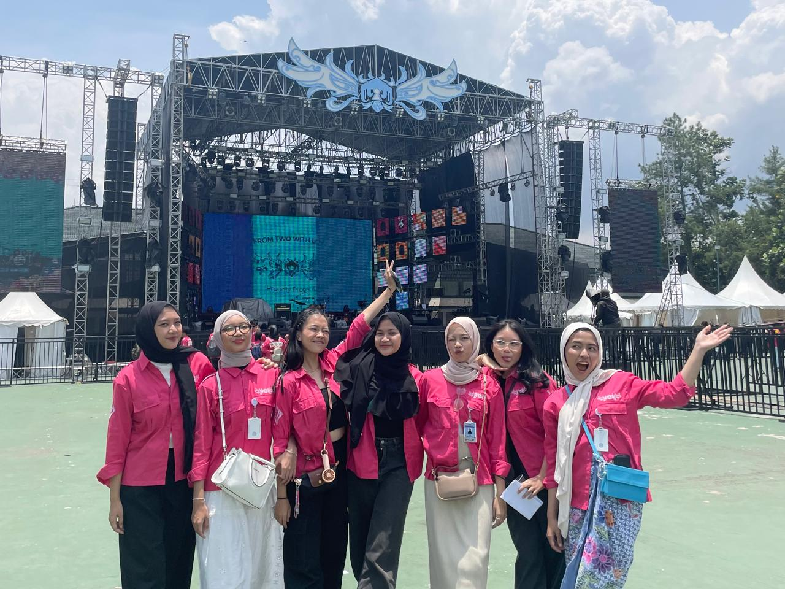
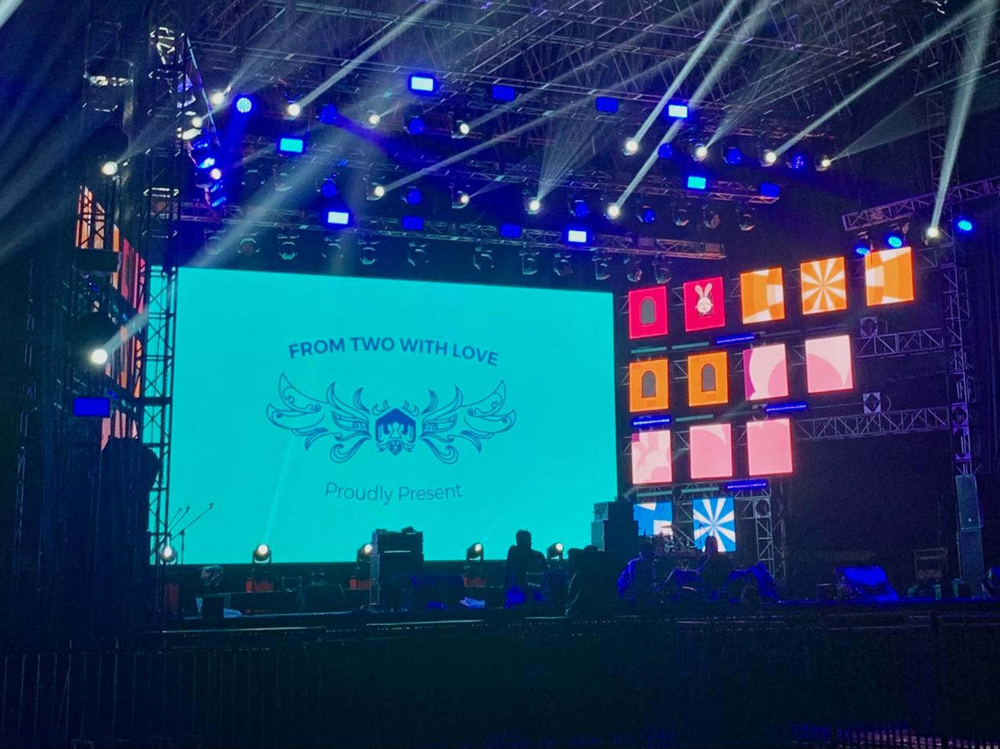
Volunteer Experience · 2024
The event — F2WL (From 2 With Love) is an annual performing arts and bazaar event that attracts around 5,000 to more than 10,000 visitors each year, with its highest attendance reaching approximately 15,000 visitors.
The role — As General Secretary, I supported event administration, documentation, meeting coordination, and communication between divisions throughout the preparation and execution of the event.
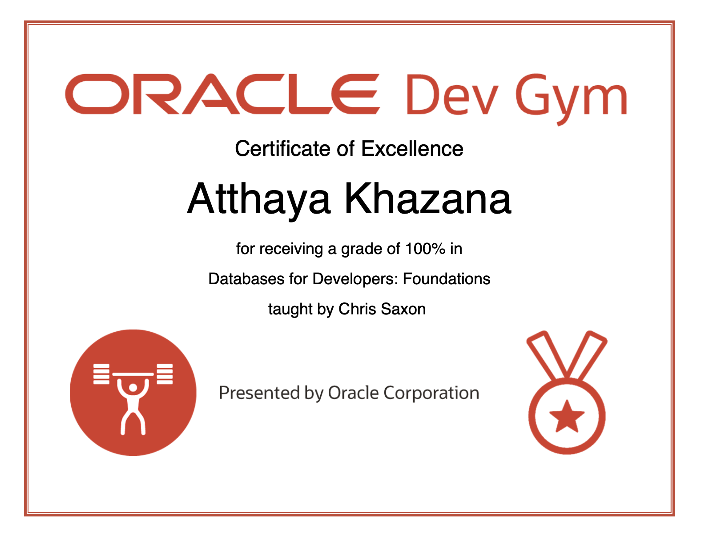
Certification · 2025
Oracle Dev Gym is a platform where I completed training in database fundamentals, SQL, and core concepts for database development, earning a Certificate of Excellence.